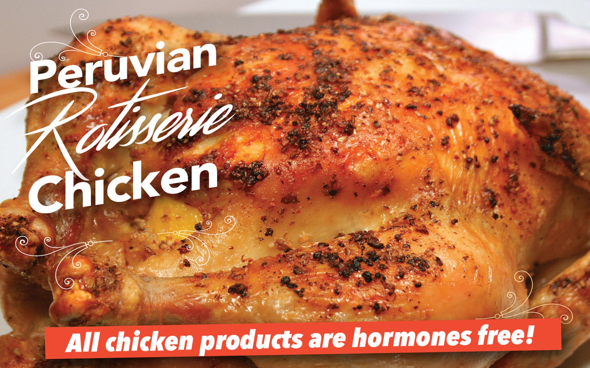
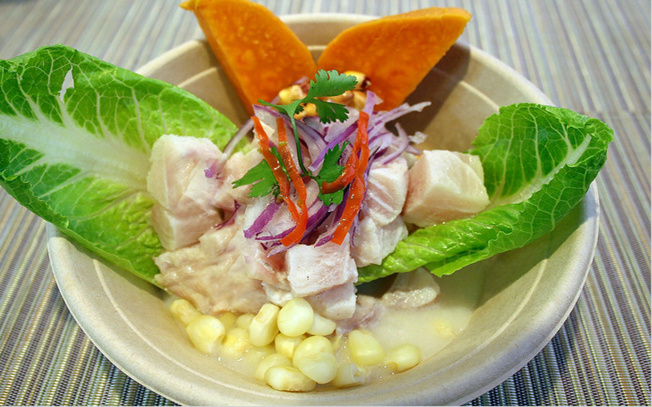
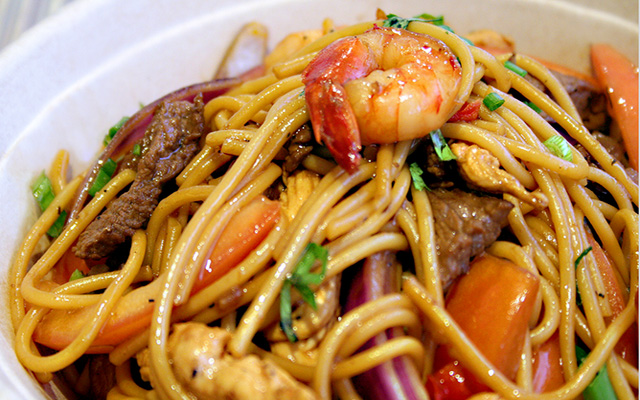
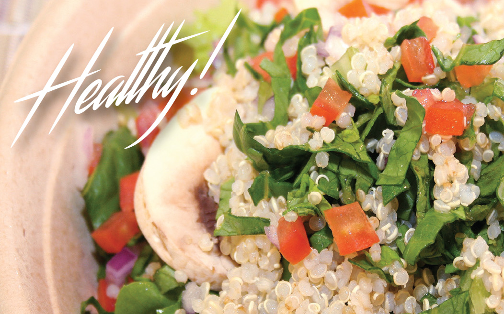
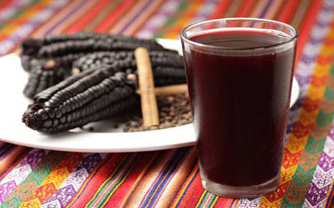
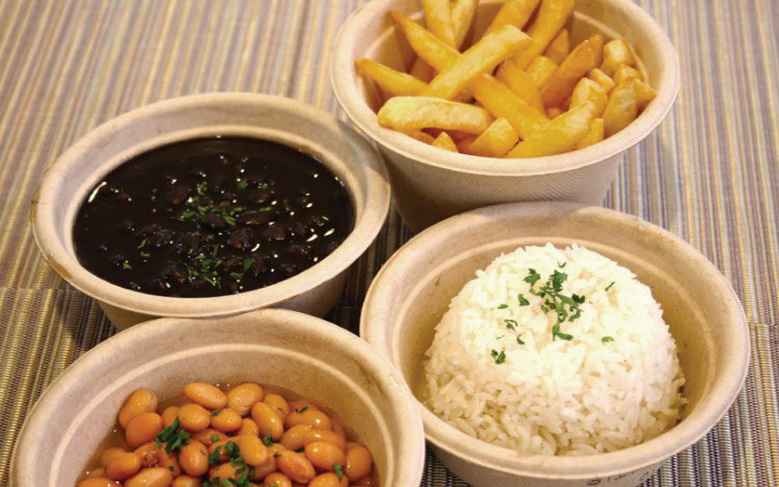
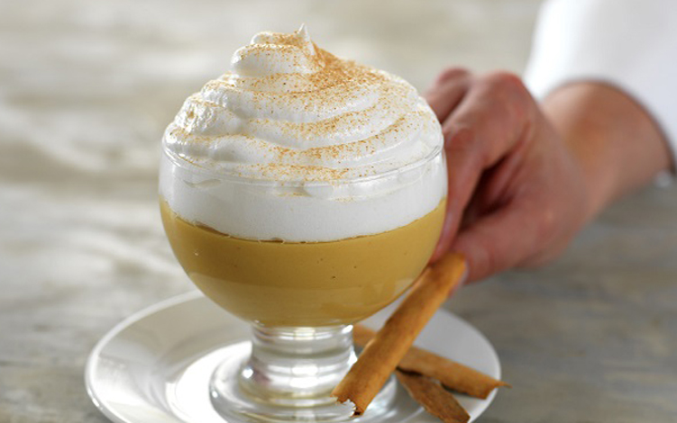
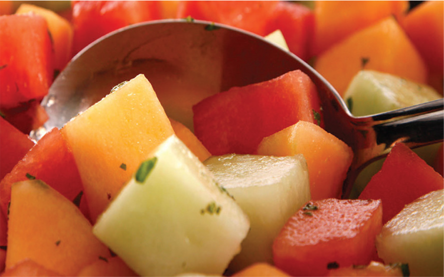

Peruvian Fresh is the next step to a new category of fast-food restaurant whose meals are healthful and good-tasting and inexpensive. We have combined the best aspects of Peruvian cuisine to create a concept that we call Healthy Fast Food. At Peruvian Fresh, the food is fresher and tastes very much better than traditional fast food. The sourcing, production and cooking is always of a higher level; and the overall experience is very pleasant.
Pika is a vicuña, and our symbol of a strong commitment with Peruvian recipes! The vicuña, sacred to the Incas and the national animal of Peru, is the spirit and the life blood of the camelid families living in the high Andes. Vicuñas are beautiful and highly communicative, signaling one another with body postures, ear and tail placement, and numerous other subtle movements. Also, our Pika loves healthy flavorful food.
We are very excited about our flavors and our food, and also the chefs and the people of Peruvian Fresh. Our menu includes a kind of food you can eat very frequently and feel virtuous, healthy and sexy, experiencing flavors you don't usually get to experience. Peruvian food is the next big thing in the gastronomic sun, and now, at Peruvian Fresh, it's easy to eat this unique cuisine at the most affordable price.
Our Peruvian Specialties
Did you know most restaurants use vegetables that contain pesticides and GMOSs? We pride ourselves on our natural ingredients! When you eat here rest assure you eat the best. At Peruvian Fresh we consider that healthy eating should be part of our daily routine, that’s why we offer plenty of healthy choices, even for those days that you find yourself in a hurry. If you love convenience and good taste, then you’ll love us too!
CEVICHE & SALADS
Fish Ceviche
Fish, Onions, Peruvian Corn, Sweet Potatoes marinated with "Leche de Tigre". Pescado, Cebolla, Maíz Peruano, Papas Dulces marinados con "Leche de Tigre".
Mixed Ceviche
Mix Seafood and Fish, Onions, Peruvian Corn and Sweet Potatos marinated with "Leche de Tigre". Mix de Mariscos y Pescado, Cebolla, Maíz Peruano y Papas Dulces marinadas con "Leche de Tigre".
Quinoa Salad
Quinua, Lettuce, Onions, Tomatoes Hearts of Palm, Mushrooms with Ceviche Style Dressing. Quinoa, Lechuga, Cebolla, Tomates, Palmitos, Champiñones con Aderezo Estilo Ceviche!
Huanca Salad
Chicken, Lettuce, Peruvian Corn, Eggs, White Cheese, with our Huancaina Dressing! Pollo, Lechuga, Maíz Peruano, Huevos, Queso Blanco con nuestro Aderezo Huancaina!
PERUVIAN SIGNATURE
Tallarín Saltado (Sauteed Noodles) - Chef Selection
Sauteed Noodles with Shrimp, Chicken, Steak and Veggies! Salteado de Fideos con Tomates, Pollo, Carne y Vegetales!
Lomo Saltado (Sauteed Steak)
Flavorful Sauteed Steak, Tomatoes, Onions Served with Rice and Fries! Deliciosa Carne Saltada, Tomates, Cebolla servido con Arroz y Papas Fritas!
Arroz Chaufa (Peruvian chinese Fried Rice) - Recommended
Peruvian chinese Fried Rice, cooked in a Wook made with our Special Rotisserie Chicken! Arroz Peruano al estilo Chino, cocinado en Wook, y con nuestro delicioso Pollo a la Brasa Especial!
Pescado a lo Macho
Fish, Octopus, Calamari, Shrimp in a Yellow Pepper Sauce! Pescado en Salsa de Ají Amarillo con Pulpo, Calamar y Camarones!
PERUVIAN BOWLS
Saltado de Pollo (Sauteed Chicken)
White Rice, Pinto Beans, Sauteed Onions and Tomatoes, Lettuce and Carrots! Arroz Blanco, Frijoles Pintos, Tomates y Cebollas Saltadas, Lechuga y Zanahoria!
Seco (Cilantro Steak)
A Unique Mix, White Rice, Pinto Beans, Tomatoes, Onions, Lettuce and Carrots! Una Combinación Única de Arroz Blanco, Frijoles Pintos, Tomate, Cebolla, Lechuga y Zanahoria!
Chifa (Sweet and Sour Pork)
White Rice, Black Beans, Tomatoes, Lettuce and Green Onions! Arroz Blanco, Frijoles Negros, Tomate, Lechuga y Cebolla China!
Ají Amarillo (Veggie Pepper)
Brown Rice, Pinto Beans, Mushrooms, Avocado, Lettuce, Tomatoes, Onions and Corn! Arroz Integral, Frijoles Pintos, Champiñones, Aguacate, Lechuga, Tomates, Cebollas y Maíz!
Menu Gallery

Rotisserie Chicken
Our recipe of The True Peruvian chicken (free of hormones and trans-fat) is cooked in ecological oven.

Ceviche
Not in the mood to cook? No problem! It's just one of the many amazing dishes we are serving everyday.

One Signature
Our delicious Tallarin Saltado is one of customer favorite. An authentic Peruvian meal. You deserve it!

Bowls
Our Peruvian chop chop bowls make the perfect lunch or dinner on the go. Very healthy and delicious!

Chicha Morada
Sweet Peruvian Beverage made from Purple Corn, which contains lots of antioxidants and it’s good for weight loss.

Sides
All have great health benefits. They are loaded with nutrients, prevent diseases and are delicious.

Desserts
Desserts complete our Peruvian experience... Food indulgence in mind? Arroz con Leche or Suspiro Limeño?

Fruit Salad
Our menu has many options for everyone. A colorful tropical fruit mix. Improves your mood and gives you energy.
Rotisserie Chicken
Our recipe of The True Peruvian chicken (free of hormones and trans-fat) is cooked in ecological oven, for a healthy and great tasting results. Try our combos: 1/2 and 1/4 Chicken with Rice and Beans; and Whole Chicken with Rice, Beans, and Fries.
Ceviche
Not in the mood to cook? No problem! It's just one of the many amazing dishes we'll be serving!
One Signature
Our delicious Tallarin Saltado is one of customer favorite. An authentic Peruvian meal. You deserve it!
Bowls
Our Peruvian chop chop bowls make the perfect lunch or dinner on the go. Very healthy and delicious!
Chicha Morada
Sweet Peruvian Beverage made from Purple Corn, which contains lots of antioxidants and it’s good for weight loss.
Sides
All have great health benefits. They are loaded with nutrients, prevent diseases and are delicious.
Desserts
Desserts complete our Peruvian experience... Food indulgence in mind? Arroz con Leche or Suspiro Limeño?
Fruit Salad
Our menu has many options for everyone. A colorful tropical fruit mix. Improves your mood and gives you energy.
Navigate with arrow keys
Customers Say
Peruvian Fresh invites you to experience a great moment at our restaurant.
Our clients have diverse preferences, but we are doing our best to deliver a big Wow, everytime and for everyone.
Love it!!! Food is DELICIOUS, fresh ingredients and healthy, going back for sure." Beltran, Patty
Es un lugar para comer rico y saludable... disfrutar del rico ceviche de pescado, ceviche mixto un rico, pescado al ajo o disfrutar de un riquísimo pollo a la brasas... Tirado, Jaquelin
Contact Us
Dine In - Drive Thru - Delivery - Take Out - Revervations for Groups.
Too busy at work but you need a good healthy meal? Order delivery or take out! Call us at (786) 456-9050.